收录于合集

第九届国际安全研究论坛暨“动荡变革期国际安全与世界政治秩序构建”学术研讨会在郑州举行
2021年7月8-10日，由郑州大学、国际关系学院、上海国际问题研究院联合主办，郑州大学政治与公共管理学院、国际关系学院《国际安全研究》编辑部、上海国际问题研究院《国际展望》编辑部承办，郑州大学国际公共安全研究中心协办的第九届国际安全研究论坛暨“动荡变革期国际安全与世界政治秩序构建”学术研讨会在郑州隆重举行，来自全国五十多所高校、科研机构、期刊编辑部的150余名专家学者与会。
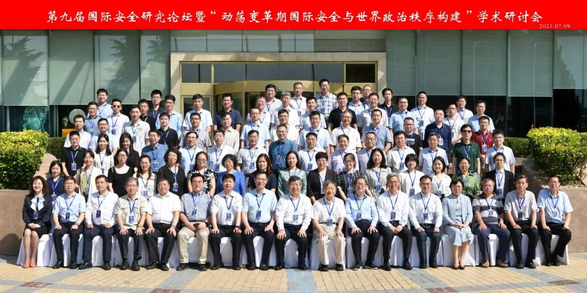
会议合影
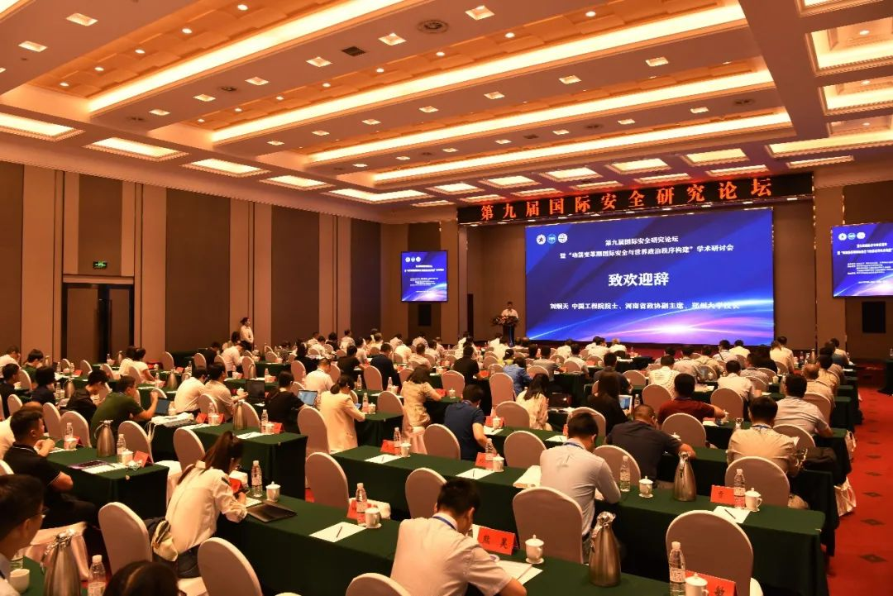
论坛现场
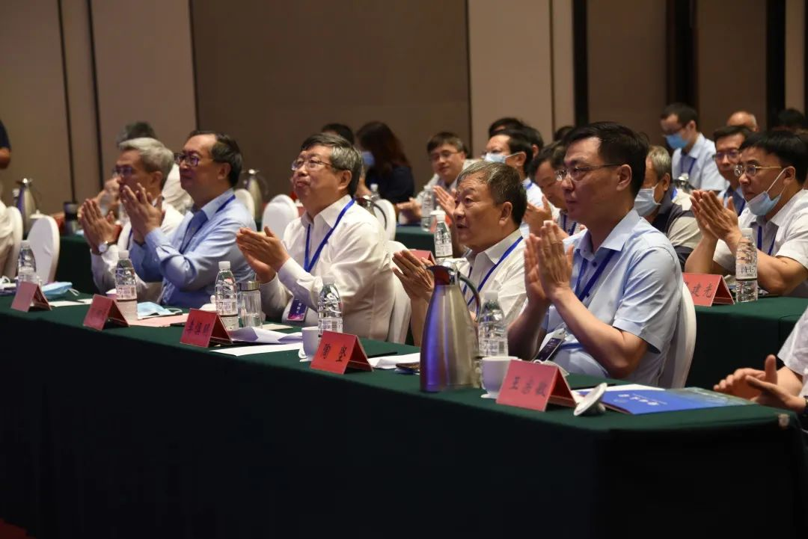
论坛现场
会议首先举行了河南高校第一个国家安全研究机构——郑州大学国家安全研究院的揭牌仪式，仪式由郑州大学党委副书记、副校长（正校级）王宗敏主持，中国工程院院士、河南省政协副主席、校长刘炯天和中国社会科学院原副院长、中国政治学会会长李慎明共同揭牌。按照国务院学位委员会、教育部关于设置“国家安全学”一级学科的要求，郑州大学成立郑州大学国家安全研究院，以自己的实际行动，切实担负起服务国家安全战略布局的重大责任，为国家安全学学科的发展，为国家安全现实需要贡献郑州大学的智慧和力量。今后，郑州大学国家安全研究院将以“立足中原，全球视野，服务国家与地方发展”为基本定位，以“学科建设、人才培养、科学研究、决策咨询”为基本功能，经过3—5年建设，形成以“政治安全、社会安全、粮食安全、网络信息安全”为特色研究领域，发挥各学科的综合优势，既注重理论研究和问题导向，又注重研究的全局性、系统性和前瞻性，努力成为学术研究和人才培养的国家安全学研究的高端平台。
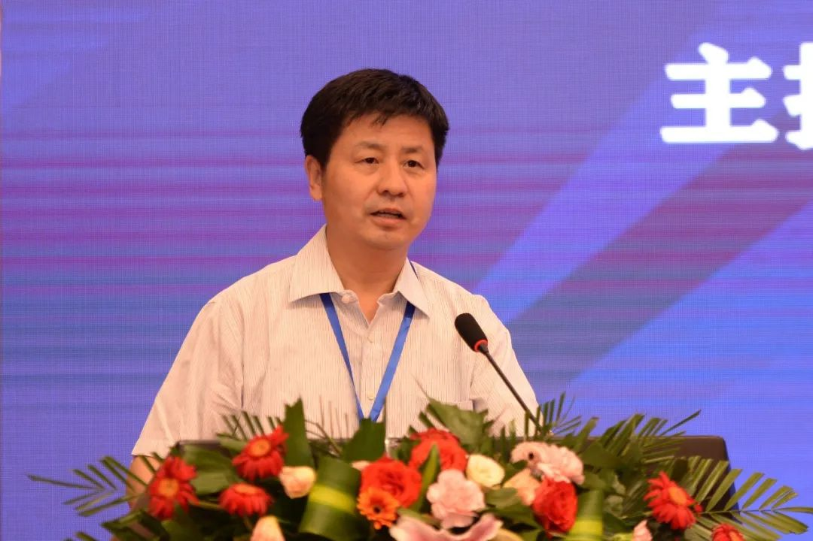
王宗敏副校长（正校级）主持揭牌仪式
郑州大学国家安全研究院成立揭牌仪式
国际关系学院《国际安全研究》主编谭秀英编审向郑州大学成立国家安全研究院表示热烈祝贺。郑州大学成立国家安全研究院，是贯彻习近平总体国家安全观的重要举措，紧紧抓住了中央健全和完善国家安全体系建设的有利契机，积极回应了国家安全理论和实践发展的迫切需求，具有重要的时代意义。郑州大学在河南高校第一个成立国家安全研究院，不仅体现了郑州大学有着雄厚的学科文化底蕴，有着政治学学科和公共管理学科等多学科综合优势和高质量的人才培养能力，而且具有使命、责任和时代担当精神。相信郑州大学国家安全研究院一定能够不负时代重任、不负学校重托，不断探索，努力为国家安全理论研究和国家安全工作作出应有的贡献。
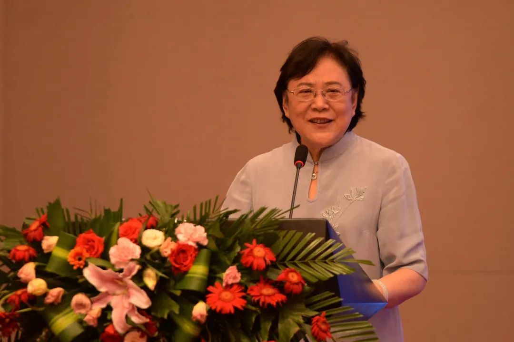
谭秀英主编致贺辞
论坛开幕式由郑州大学政治与公共管理学院高卫星院长主持，刘炯天校长致欢致辞。刘炯天校长指出，疫情背景下的世界，百年未有之大变局正加速演进，人类社会再次面临何去何从的历史当口，维护国际安全、推动全球治理体系变革尤为重要。加强国际安全理论和现实问题研究，对于我们更加从容地走向中华民族伟大复兴、推动构建人类命运共同体意义重大。在这样的背景下，郑州大学、国际关系学院、上海国际问题研究院共同主办“动荡变革期国际安全与世界政治秩序构建”学术研讨会正逢其时。此次会议嘉宾都是著名的专家学者，视野前瞻、学识渊博，学术造诣深厚，希望各位专家进行充分交流，对国际安全和国家安全建设、国家安全学科发展献计献策，也对郑州大学的一流大学建设及相关学科的发展多提宝贵建议。
刘炯天校长致辞
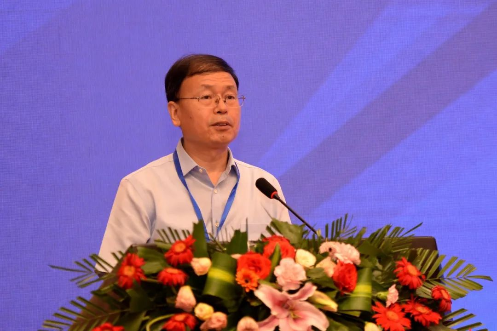
高卫星院长主持开幕式
国际关系学院院长、《国际安全研究》编辑委员会主任陶坚和上海国际问题研究院院长、《国际展望》主编陈东晓分别致辞。
陶坚院长代表国际关系学院，对本次研讨会的顺利召开表示热烈祝贺，对各位参加研讨会的学者专家和领导表示热烈欢迎。他指出，在本次会议前一周，中共中央隆重举行了庆祝中国共产党成立100周年大会，习近平总书记在重要讲话中指出，“新的征程上，我们必须增强忧患意识、始终居安思危，贯彻总体国家安全观，统筹发展和安全，统筹中华民族伟大复兴战略全局和世界百年未有之大变局”。这两个统筹对我们的教学研究工作指明了方向，对政治学、国家安全、国际关系、外交等学科的发展指明了方向，也对繁荣我国的哲学社会科学事业指明了方向。相信通过本次学术研讨会，能够为我们认真贯彻落实习总书记的重要讲话，发挥学者应有的力量。同时，陶坚院长代表国际关系学院，对郑州大学国家安全研究院的成立表示热烈祝贺，希望国际关系学院继续加强与上海国际问题研究院、郑州大学以及各兄弟院校之间的合作，努力推进国家安全学一级学科建设和人才培养，形成具有中国特色的国家安全学。
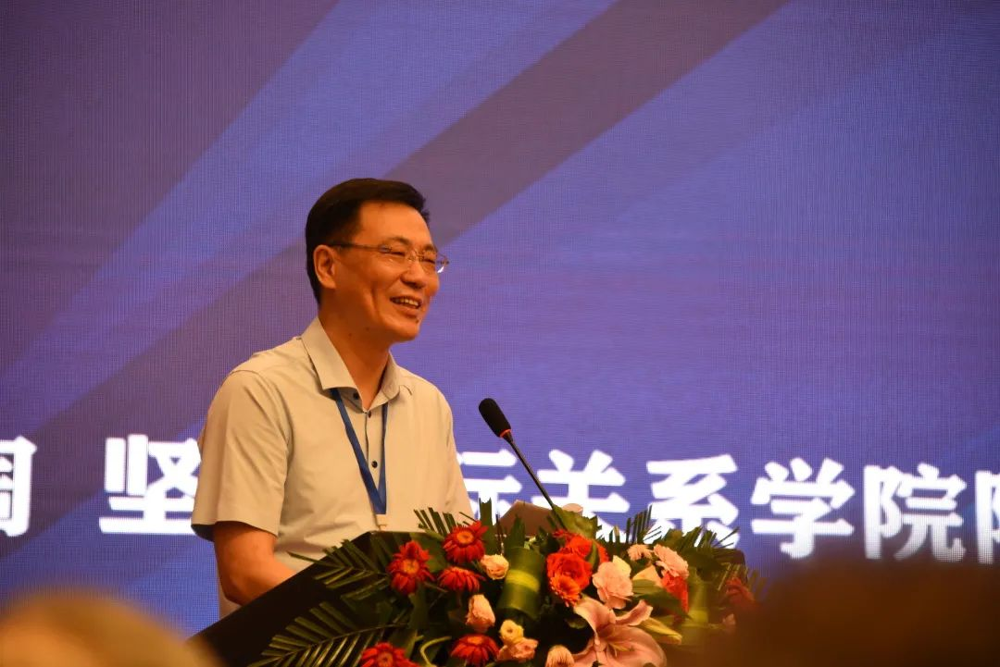
国际关系学院陶坚院长致辞
陈东晓院长在致辞中对具体承办本次论坛的郑州大学政治与公共管理学院的各位老师和同学，表示由衷感谢。他指出，本届论坛的主题“动荡变革期国际安全与世界政治秩序的构建”，契合当今世界正经历百年未有之大变局和中华民族伟大复兴战略全局的历史关口。面对世界格局重大深刻变化，面对全球化遭遇严峻的逆流，面对保护主义、单边主义、霸权主义以及各种身份政治意识形态斗争，面对国际经济、科技、文化、安全、生态格局发生深刻调整，国际安全与国家安全问题已经深度交融在一起。我们如何认清国际安全秩序的发展方向，如何在继续推进世界互利共赢与共同发展的现代化过程中，把握国际安全格局背后的历史逻辑、理论逻辑和实践逻辑，如何统筹发展和安全，这些都是需要我们在理论政策研究中回应的时代命题。本次论坛设计的四个分论坛，都是其中重要的问题，需要我们不断地总结历史，并做出前瞻性的理论思考，政策阐释。
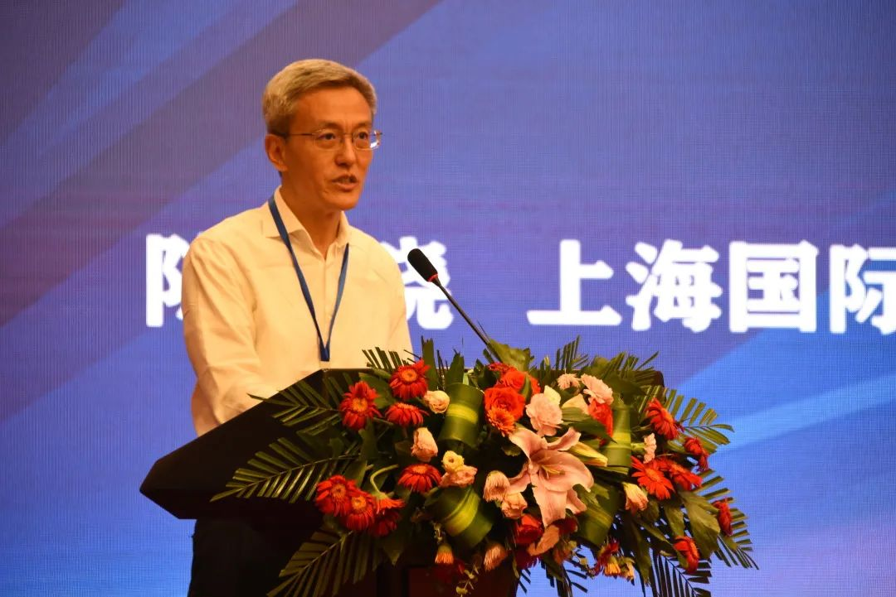
上海国际问题研究院陈东晓院长致辞
主旨发言阶段由国际关系学院《国际安全研究》主编谭秀英编审和上海国际问题研究院《国际展望》常务副主编孙震海研究员分别主持。中国社会科学院原副院长、中国政治学会会长李慎明，上海国际问题研究院学术委员会主任杨洁勉，中国国际关系学会副会长、中华美国学会顾问黄仁伟，中国国际关系学会副会长、吉林大学国际关系研究所所长、公共外交学院创始院长刘德斌，同济大学政治与国际关系学院院长门洪华，对外经贸大学国际关系学院院长戴长征，郑州大学政治与公共管理学院教授、国际公共安全研究中心主任余丽，国际关系学院教授刘跃进等八位专家学者，分别作大会主旨演讲。
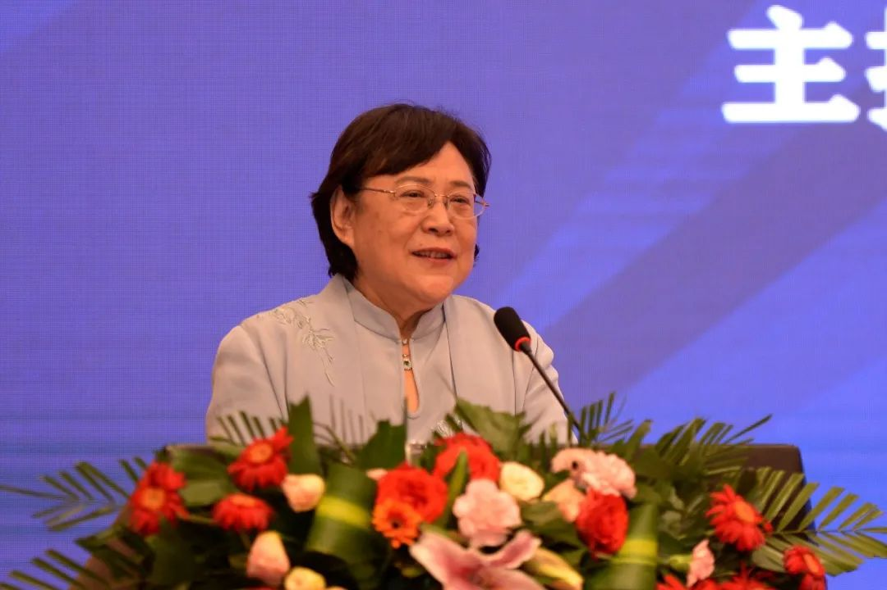
谭秀英主编主持主旨演讲（I）

孙震海常务副主编主持主旨演讲（Ⅱ）
李慎明会长的演讲题目为《深入学习和研究习近平总体国家安全观》。他指出，总体国家安全观是对中国共产党国家安全思想的继承与发展。我们党历来重视高度重视国家安全问题，始终坚持从整体上思考和把握国家安全。总体国家安全观蕴含着丰富的理论内涵，闪烁着丰富的马克思主义思想光芒，蕴含了中华古代优秀传统文化思想的基础，是对西方国家安全理论与实践的批判与超越。总体国家安全观对新时代国家安全工作具有重要的指导意义，为新时代国家安全观研究和安全工作实践提供了理论指导，为推进国际公共安全治理提供了中国方案。
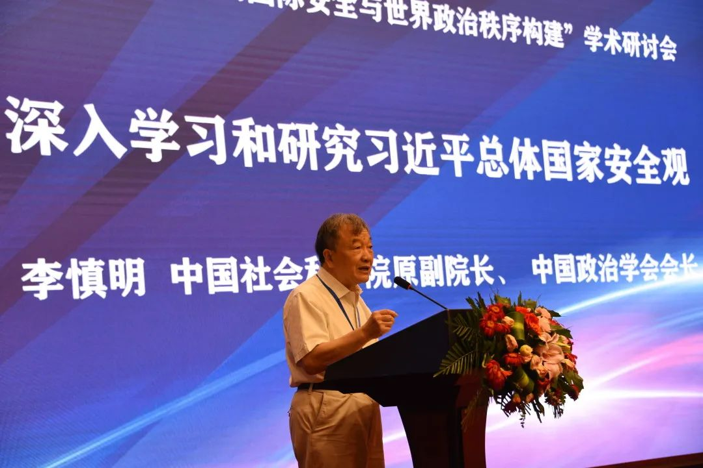
李慎明会长主旨演讲
杨洁勉主任的演讲题目为《疫后国际格局转型和全球安全治理的互动》，他提出三点看法：第一，当前国际格局正面临着理念重构。国际社会对于当前世界政治安全的态势、未来的发展趋势存在着不同的总结和解读，并且还依照不同的世界观，制定相关的战略政策举措，并加以实施。第二，当前国际安全问题出现新变化和新特点。美国无限扩大安全威胁问题，安全泛化，这是倒行逆施；美国滥化安全加深了国际安全问题，许多国际条约失去了它们的严肃性。第三，地区安全问题中的政治因素在加剧。
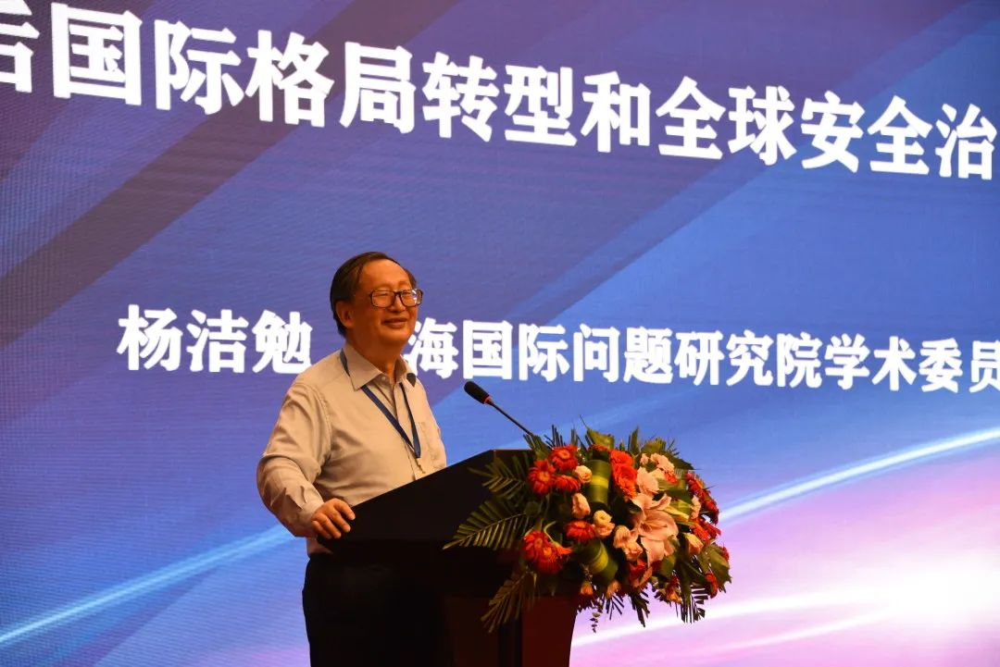
杨洁勉主任主旨演讲
黄仁伟副会长的演讲题目为《中美战略相持阶段与中国国家安全新形势》。他指出，中美战略竞争已经成为美国官方正式对中美关系的定义。中美战略竞争关系到国际安全和国家安全的未来走向。中美战略竞争在本质上有四个性质，即持久性、全局性、全要素性、制度性。中美战略相持阶段的特征主要表现在中美力量对比上，具有以下几个特点：美国总体实力是在下降的，中国的总体实力是在上升的，但是总体是美国强于我；美国是降中有强，我是升中有弱，科技实力、军事实力和软实力是美国的强项；中美差距越来越缩小，而且在一个领域一个领域地被中国突破；因为双方相持不下，所以争夺中间力量是这个竞争的一个特点；竞争最后取决于双方内部矛盾的解决，谁解决的好，谁就能在竞争中胜出。
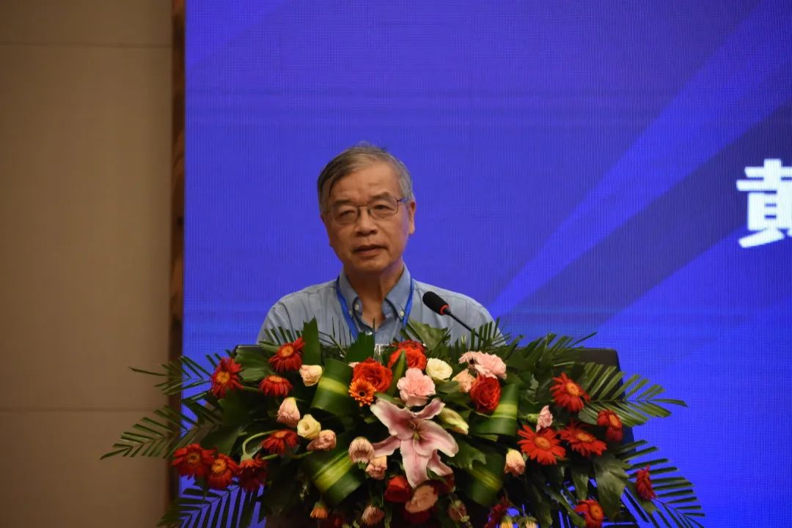
黄仁伟副会长主旨演讲
刘德斌副会长的演讲题目为《大变局中国际安全形势的异动》。他指出，大变局中国际安全形势的异动主要体现在五个方面：一是大国关系的异动正在进行之中，还没有完全稳定下来；二是世界体系结构的变化，中心在扩大，一部分国家，比如中国进入到中心，外围是在缩小，同时也在进一步分化；三是西方社会结构的问题，中产阶级在萎缩，社会的不平等在加剧；四是全球社会结构的变化，随着信息化革命的推进，人类平行的组织形式蔓延开来，这种平行性的组织正在挑战国家的作用；五是中国国际地位和国际形象的变化。
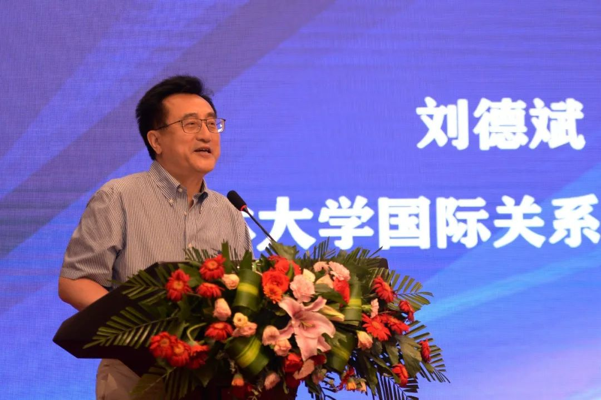
刘德斌副会长主旨演讲
门洪华院长的演讲题目为《新时代中国国际统一战线思想与实践》。他指出，统一战线作为我们党的三大法宝之一，在凝聚中国力量，应对多重挑战方面发挥了非常重要的作用，始终是治国理政的一个重要战略。国际统一战线是国内统一战线在国际社会的延伸，在中国开展外交和发展对外关系，营造良好的外部环境等方面发挥了非常重要的作用。国际统一战线的基本要义是基于共同利益，团结大多数，推进共同目标的实现。在构建国际统一战线的过程当中，我们要区别积极力量、中立力量和敌对力量或消极力量等不同性质的国际力量，通过三种途径构建统一战线，即内部团结、外部分化和中间争取等三个策略。
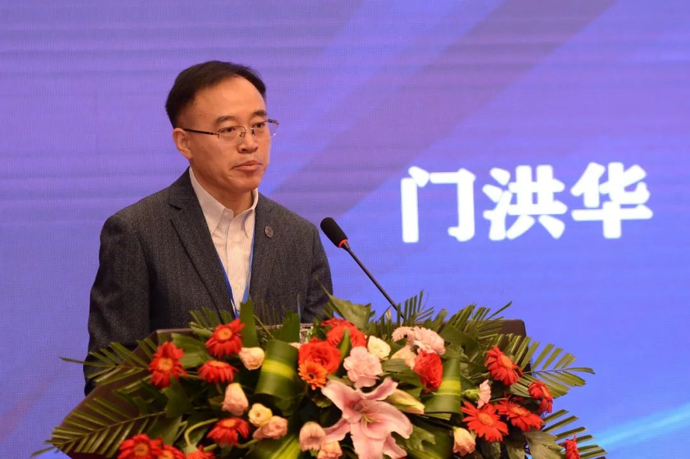
门洪华院长主旨演讲
戴长征院长的演讲题目为《疫情冲击下的国际秩序演变及中国应对》。他指出，新冠肺炎疫情从两个方面加速了由美国主导的、以自由主义意识形态为基础的、以服务于西方国家利益的“非中性”规则为支柱的自由国际秩序的衰败。第一，新冠肺炎疫情的暴发与传播，进一步导致了西方国家内部民粹主义的盛行，种族仇恨、排外情绪等在一些国家愈演愈烈。第二，新冠肺炎疫情进一步暴露了西方国家主导的自由国际秩序内在的不平等性。中国需要从理念和实践两个方面入手，推动现有国际秩序向着更加公正合理方向发展。在理念上，中国要在国际社会中积极弘扬人类命运共同体理念，倡导各国建设“相互尊重、公平正义、合作共赢”的新型国际关系。在实践上，中国要为全球治理积极贡献公共产品，以使全球治理惠及世界各国。
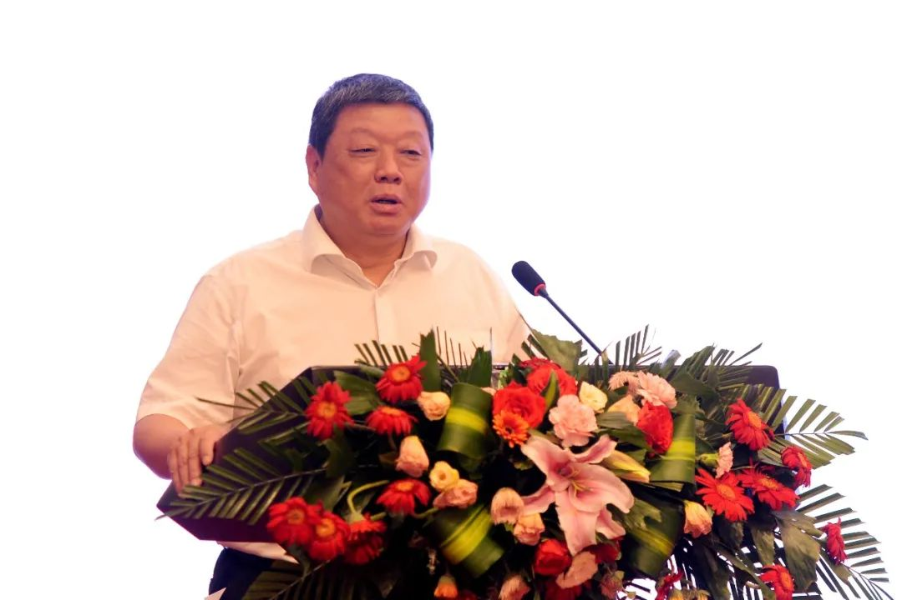
戴长征院长主旨演讲
余丽副院长的演讲题目为《安全对自由的优先：网络空间国际治理的国家属性》。她指出，互联网的“非中性”作用和网络虚拟空间与现实空间的互动塑造了国家政治功能，两者共同决定了网络空间具有国家属性的特征。网络空间国家属性的特征主要体现在四个方面：其一，网络空间是对整体现实世界的模拟和再造；其二，网络空间影响国家政治回应性和引导性；其三，网络空间与国家行为体互动，使互联网成为国家间争夺权力和利益的工具；其四，网络空间国家属性的战略效应：维持霸权、政治渗透、权力转移。所以，“安全”对“自由”的优先应当成为网络空间国家安全治理的首要原则。对主权国家而言，国家安全至高无上，或者说唯有安全才能更加自由。
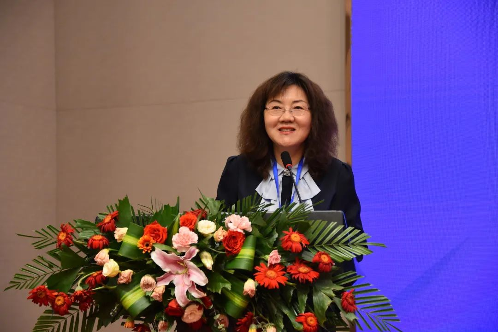
余丽副院长主旨演讲
刘跃进教授的演讲题目为《防疫治疫是国家安全工作的重要内容》。他指出新冠疫灾是国家安全面临的生物威胁。疫情之下，最重要的不是“生物安全”，而是“生物威胁”。疫情直接威胁“国民安全”，国民安全是国家安全工作的最终目的。疫灾危害对国家安全的具体危害主要有直接危害国民安全、间接危害经济安全、进一步危害社会安全、军事安全，还间接危害政治安全、主权安全，危害程度取决于管控。生物安全是为人的安全服务，在国家安全体系中是为国民及其安全服务的。疫灾防控是重要的国家安全工作。新冠疫灾给人类的教训很多很大，但对国家安全理论和实践来说，其中有一条必须铭记，即从国家安全高度认识医药生物科技的战略地位，把关系国民生命安全的医药生物科技列为国家安全关键技术进行重点研发。
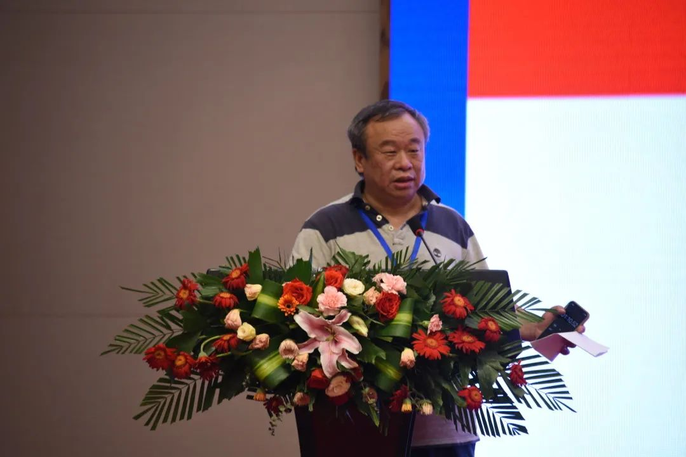
刘跃进教授主旨演讲
会议设置了四个分论坛，主题分别为新科技革命与国际安全、新全球化背景下国际体系与国际秩序、国际公共安全与网络安全、大变局下的国际政治经济安全。与会专家学者围绕论坛主题发言，涉及国际安全研究的理论、议题、战略，涵盖当代安全理论、战略与政策问题。
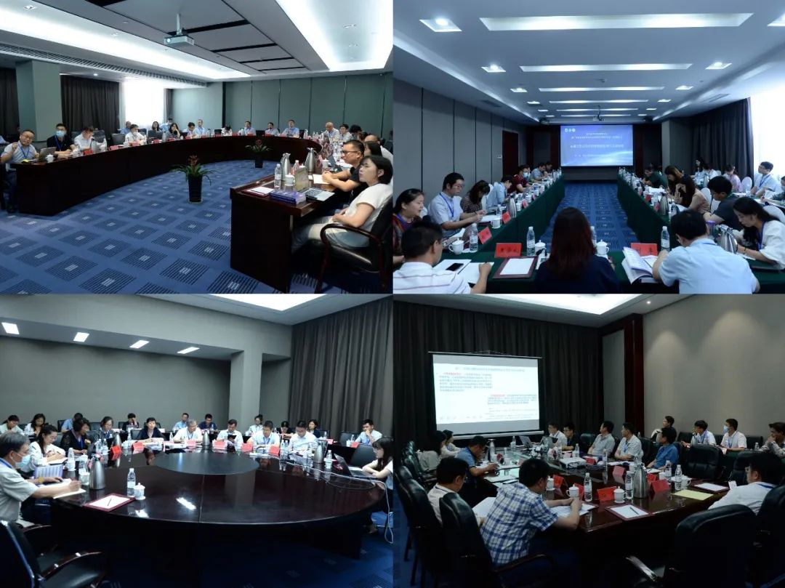
分论坛情况
会议总结阶段由余丽副院长主持，郑州大学政治与公共管理学院副教授任中义，上海国际问题研究院《国际展望》责任编辑、副研究员石晨霞，中国人民大学国际关系学院教授宋伟，郑州大学政治与公共管理学院讲师王高阳作为汇报人，就分论坛的研讨情况向大会进行了汇报。汇报人普遍认为，与会学者发言涉及的议题非常广泛，既有理论探讨，又有对政策实践的阐释；与会代表围绕着论坛主题进行了深入、有意义、有展望性的探讨，整个会议现场气氛热烈而友好。本次论坛具有三个明显特点：优秀的年轻人非常多；讨论的“干货”多，涉及很多事实性的和技术性的细节；跨学科的研究特点非常明显。
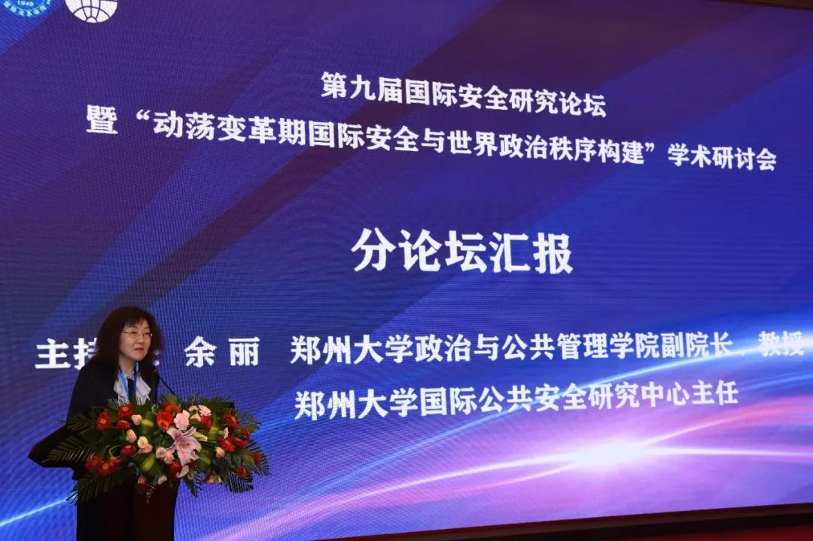
余丽副院长主持会议总结阶段
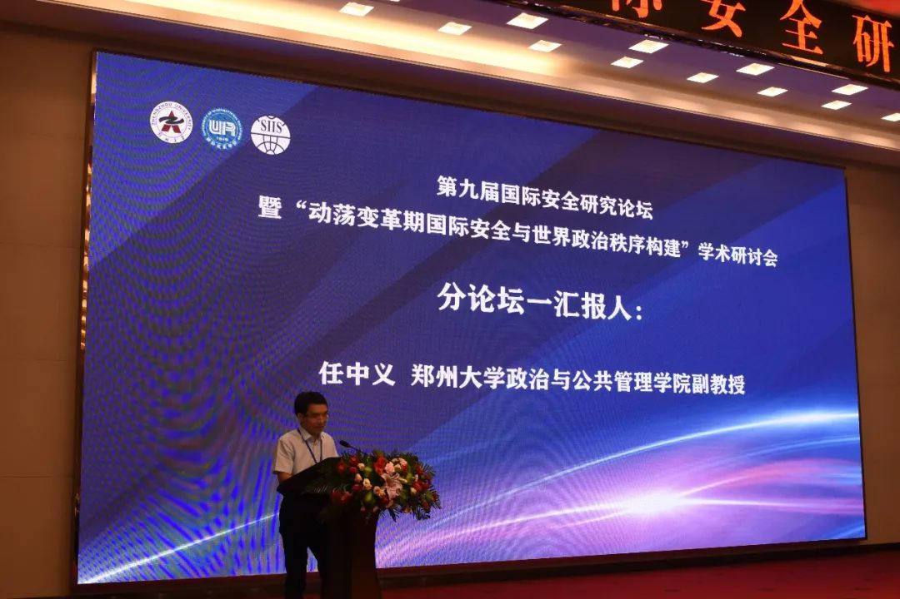
任中义副教授汇报分论坛一情况
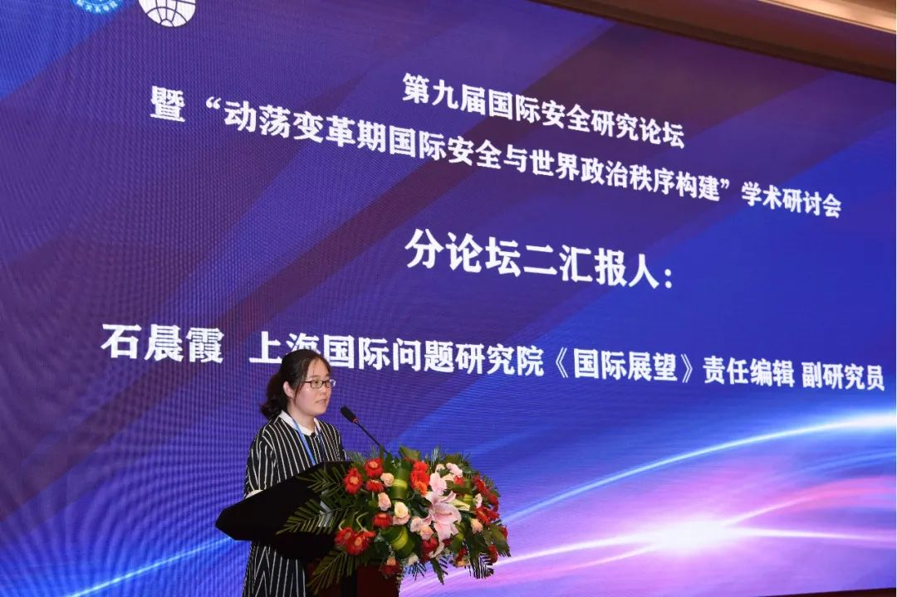
石晨霞副研究员汇报分论坛二情况
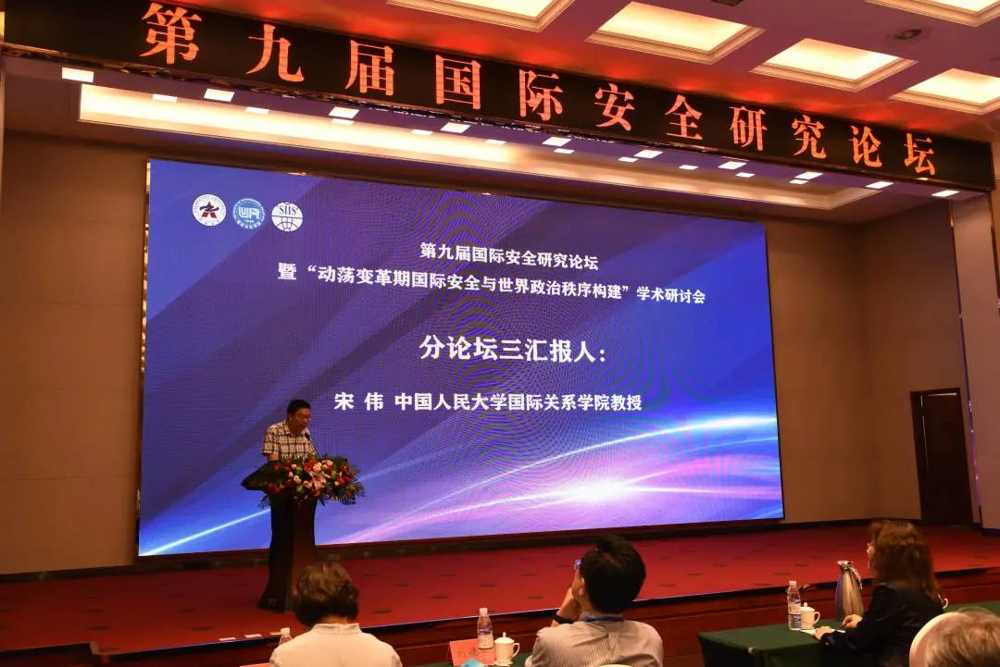
宋伟教授汇报分论坛三情况
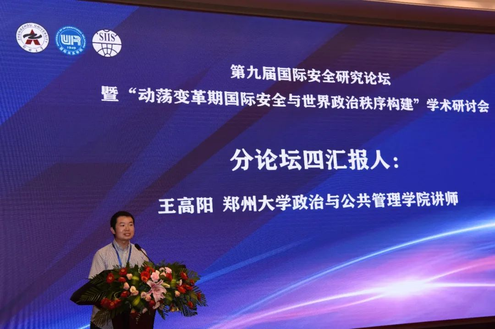
王高阳讲师汇报分论坛四情况
大会闭幕式由郑州大学政治与公共管理学院党委书记焦世君主持，谭秀英主编和孙震海常务副主编致闭幕词。两位老师对本次会议主办方及承办方团队付出的大量心血劳动表示感谢，对来自全国各地的学者来到母亲河岸边郑州，在会议上进行的热烈研讨表示感谢。期待本届论坛中经过代表们认真交流和名家点评的论文，深度加工以后成为炉火锤炼的精品。
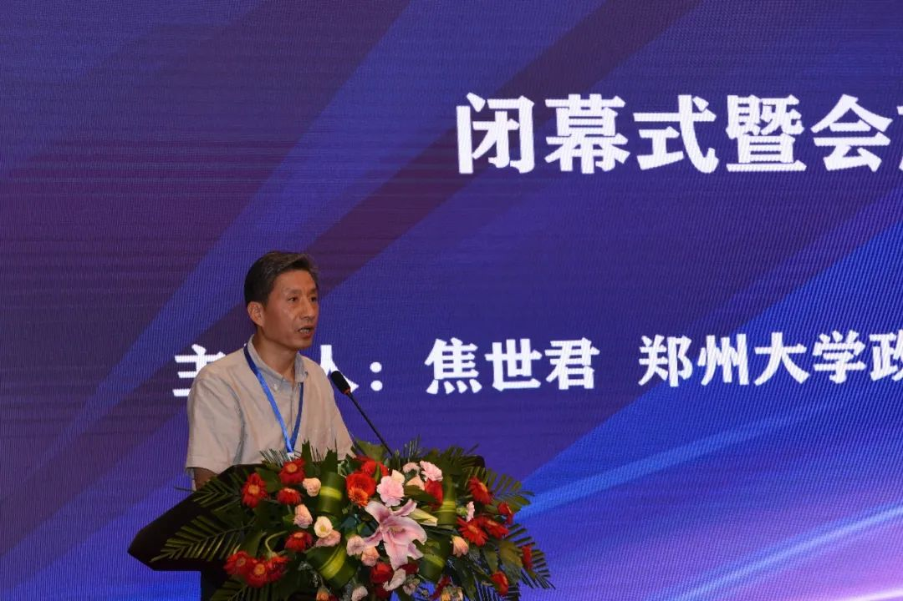
焦世君书记主持闭幕式
最后，论坛举行了会旗交接仪式。第十届国际安全研究论坛东道主厦门大学国际关系学院/南洋研究院院长李一平教授从焦世君书记手中接过会旗并致辞。李一平院长简要介绍了厦门大学国际关系学院/南洋研究院的发展历史，认为国家安全研究正当其时，而且经历前九届会议，国际安全研究论坛已经形成了一个很好的品牌。2022年即将在厦门大学举办的第十届国际安全研究论坛，既是对论坛发展的一个阶段性总结，也有利于我们更好地在百年未有大变局下重新出发。本次论坛及学术研讨会按照既定议程圆满结束。
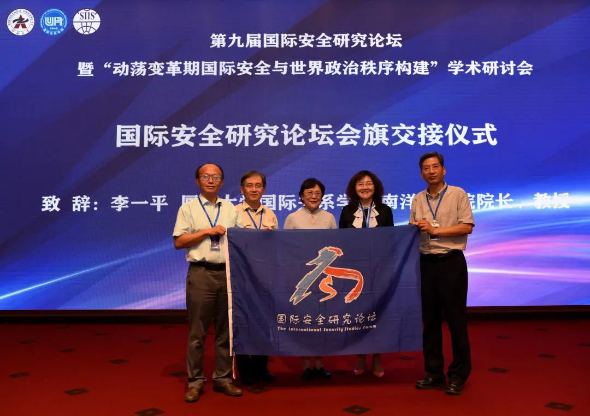
会旗交接仪式
（郑州大学政治与公共管理学院余丽、王高阳供稿）
文章观点不代表本平台观点，本平台评译分享的文章均出于专业学习之用, 不以任何盈利为目的，内容主要呈现对原文的介绍，原文内容请通过各高校购买的数据库自行下载。
好好学习，天天“在看”